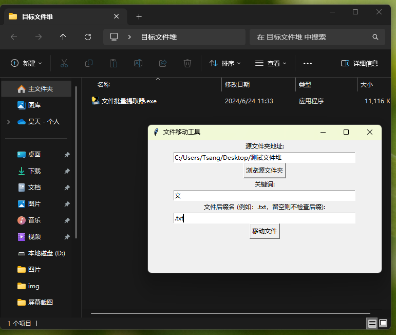
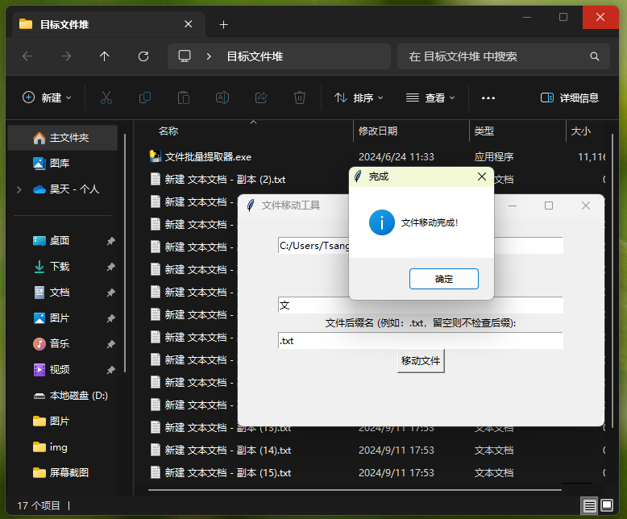
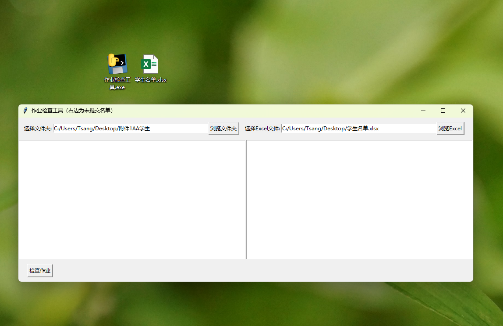
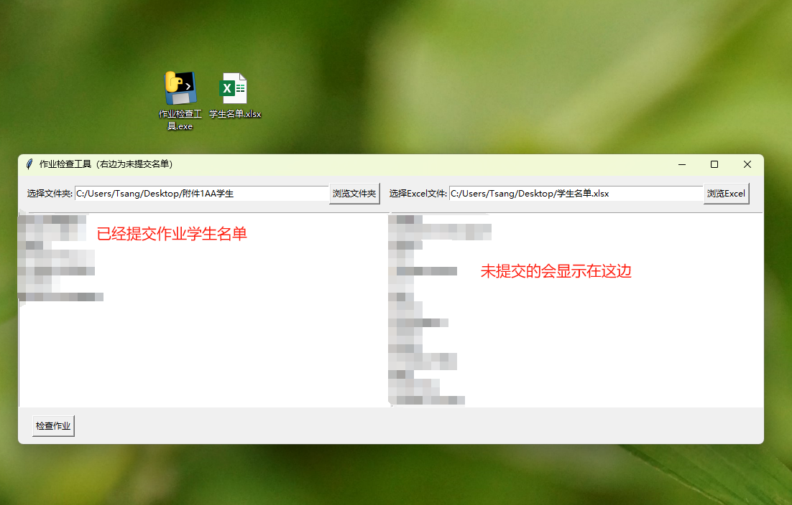

本程序可实现根据文件名中关键词或文件后缀名批量提取文件。
首先，是一个案例文件夹，里面有很多的文件，他们的名字都不相同，但是有相同的关键词，比如：“新建”，或者他们都有相同的后缀“.txt”。
把该程序移动到目标文件夹，设置好要移动的文件地址即可，然后输入需要提取文件的关键词，或者后缀（也可以单独使用，比如只输入关键词或者只输入后缀名也可以）。
点击“移动文件”，即可把目标文件移动到当前程序所在的文件夹当中。
通过这个软件，可以实现网络收作业。比如同学提交的作业在群内，只需要要求同学的作业命名方式有一个共同点，就可以把所有同学的作业通过这种方式从windows电脑的下载文件夹中，把同学的作业批量提取出来做出统计，从而不需要在杂乱的文件夹中一个个挑选，特别是同学交作业周期长，难免出现其他文件混入到下载目录当中的情况。
本程序可实现根据已有的excel学生名单表格，对应着文件夹中无论是文件还是文件夹，根据名称结合excel名单筛选出未提交作业的学生。
首先打开应用有两个版块，左右会显示已经提交学生，右边则显示未提交。
左边选择要检查的文件夹，右边选择班级的学生名单。
点击“检查作业”，即可筛选出已经提交作业和未提交作业的学生。
通过这个软件，可以实现检查作业。结合前面的文件提取软件，批量提取学生作业，然后再通过这个检查作业程序，在很快的时间内筛选出未提交学生的名字，并且做好统计，这样可以更加高效快速的解决收作业问题。